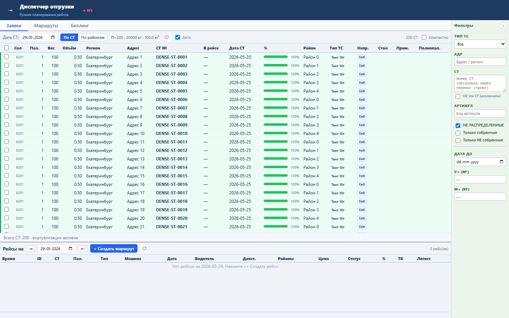
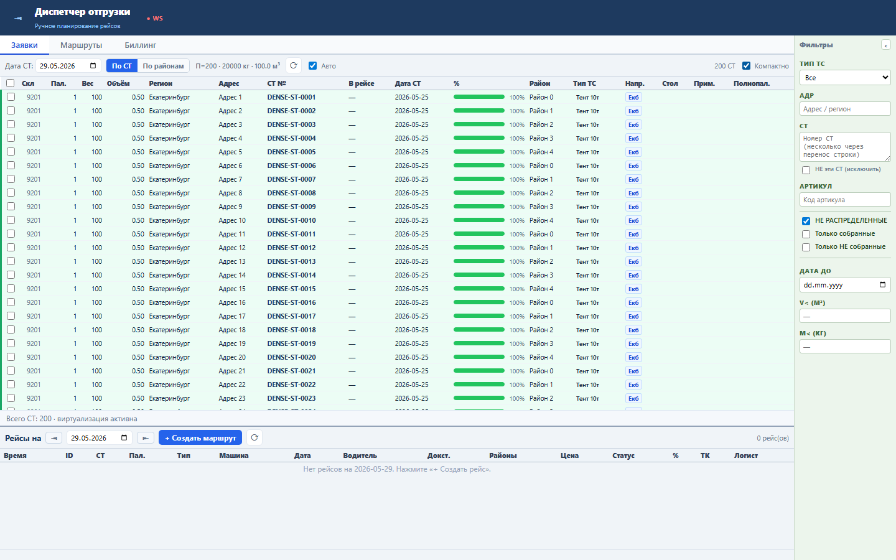

Компактный режим помогает диспетчеру просматривать больше строк доступных СТ без потери выбора и действий.
Состояние stDenseMode применяет класс dispatch-grid-dense и переключает расчетную высоту строк virtualizer с 27 до 22 px.
Sprint 49 закрыт functional, load и UI smoke проверками.

